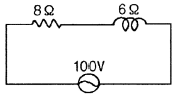
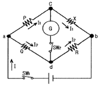
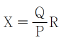
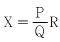
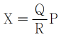
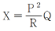
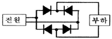
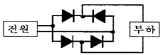
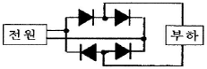
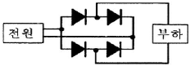

전기기능사 (2009-03-29 기출문제)
1과목: 전기 이론
1. 100[㎌]의 콘덴서에 1000[V]의 전압을 가하여 충전한 뒤 저항을 통하여 방전시키면 저항에 발생하는 열량은 몇 [cal]인가?
- 3
- 5
- 12
- 43
(정답률: 62%)

2. 3상 전원에서 한 상에 고장이 발생하였다. 이 때 3상 부하에 3상 전력을 공급할 수 있는 결선 방법은?
- Y결선
- △결선
- 단상결선
- V결선
(정답률: 64%)
3. 반지름 25[㎝], 권수 10의 원형 코일에 10[A]의 전류를 흘릴 때 코일 중심의 자장의 세기는 몇 [AT/m]인가?
- 32
- 65
- 100
- 200
(정답률: 56%)
4. 물질에 따라 자석에 반발하는 물체를 무엇이라 하는가?
- 비자성체
- 상자성체
- 반자성체
- 가역성체
(정답률: 88%)
5. 4[Ω], 6[Ω], 8[Ω]의 3개 저항을 병렬 접속할 때 합성 저항은 약 몇[Ω] 인가?
- 1.8
- 2.5
- 3.6
- 4.5
(정답률: 78%)
6. 0.02[㎌], 0.03[㎌] 2개의 콘덴서를 병렬로 접속할 때의 합성용량은 몇 [㎌] 인가?
- 0.⑤
- 0.012
- 0.06
- 0.016
(정답률: 84%)
7. 평행판 전극에 일정 전압을 가하면서 극판의 간격을 2배로 하면 내부 전기장의 세기는 어떻게 되는가?
- 4배로 커진다.
- 1/2배로 작아진다.
- 2배로 커진다.
- 1/4배로 작아진다.
(정답률: 41%)
8. 그림과 같은 회로에 흐르는 유효분 전류[A]는?

- 4A
- 6A
- 8A
- 10A
(정답률: 36%)
9. 2[C]의 전기량이 두 점 사이를 이동하여 48[J]의 일을 하였다면 이 두 점 사이의 전위차는 몇 [V]인가?
- 12V
- 24V
- 48V
- 64V
(정답률: 85%)
10. 다음 중 불평등 전장에서 국부적인 방전 현상은?
- 불꽃
- 아크
- 글로부
- 코로나
(정답률: 60%)
11. 그림의 휘스톤브리지의 평형 조건은?





(정답률: 70%)
12. 자기 인덕턴스 10[mH]의 코일에 50[Hz], 314[V]의 교류 전압을 가했을 때 몇 [A]의 전류가 흐르는가?(단, 코일의 저항은 없는 것으로 하며, π=3.14로 계산한다.)
- 10A
- 31.4A
- 62.8A
- 100A
(정답률: 38%)
13. 교류회로에서 유효전력을 (P), 무효전력을 (Pr), 피상전력을 (Pa) 이라 하면 역률(cosθ)을 구하는 식은?
- P/Pa
- Pa/P
- P/Pr
- Pr/P
(정답률: 53%)
14. 용량이 45[Ah]인 납축전지에서 3[A]의 전류를 연속하여 얻는다면 몇 시간 동안 이 축전지를 이용할 수 있는 가?
- 10시간
- 15시간
- 30시간
- 45시간
(정답률: 84%)
15. 자체인덕턴스 L1, L2, 상호인덕턴스 M의 코일을 같은 방향으로 직렬 연결한 경우 합성인덕턴스는?
- L1+ L2+ M
- L1+ L2- M
- L1+ L2-2 M
- L1+ L2+ 2M
(정답률: 79%)
16. 다음 중 전도율의 단위는?
- [Ωㆍm]
- [℧ㆍm]
- [Ω/m]
- [℧/m]
(정답률: 55%)
17. 1[kWh]는 몇 [kcal]인가?
- 860
- 2400
- 4800
- 8600
(정답률: 58%)
18. 전기장(電氣場)에 대한 설명으로 옳지 않은 것은?
- 대전(帶電)된 무한장 원통의 내부 전기장은 0이다.
- 대전된 구(球)의 내부 전기장은 0이다.
- 대전된 도체내부의 전하(電荷) 및 전기장은 모두 0이다.
- 도체표면의 전기장은 그 표면에 평행이다.
(정답률: 64%)
19. 전류에 의해 만들어지는 자기장의 자기력선 방향을 간단하게 알아보는 법칙은?
- 앙페르의 오른나사의 법칙
- 플레밍의 오른손 법칙
- 플레밍의 왼손 법칙
- 렌츠의 법칙
(정답률: 74%)
20. V = 100 sin ωt + 100 cos ωt의 실효값[V]은?
- 100[V]
- 141[V]
- 172[V]
- 200[V]
(정답률: 32%)
2과목: 전기 기기
21. 같은 회로의 두 점에서 전류가 같을 때에는 동작하지 않으나 고장시에 전류의 차가 생기면 동작하는 계전기는?
- 과전류계전기
- 거리계전기
- 접지계전기
- 차동계전기
(정답률: 73%)
22. 보호 계전기의 시험을 하기 위한 유의 사항이 아닌 것은?
- 시험회로 결선시 교류와 직류의 확인
- 영점의 정확성 확인
- 계전기 시험 장비의 오차 확인
- 시험 회로 결선시 교류의 극성 확인
(정답률: 64%)
23. 변압기유의 열화 방지를 위해 쓰이는 방법이 아닌 것은?
- 방열기
- 브리이더
- 컨서베이터
- 질소봉입
(정답률: 40%)
24. 접지공사의 종류에서 제3종 접지공사의 접지 저항값은 몇 [Ω] 이하로 유지하여야 하는가?(관련 규정 개정전 문제로 여기서는 기존 정답인 3번을 누르면 정답 처리됩니다. 자세한 내용은 해설을 참고하세요.)
- 10Ω
- 50Ω
- 100Ω
- 150Ω
(정답률: 70%)
25. 전기자 저항 0.1[Ω], 전기자 전류 104[A], 유도 기전력 110.4[V]인 직류 분권발전기의 단자 전압은 몇 [V]인가?
- 98V
- 100V
- 102V
- 1⑤V
(정답률: 66%)
26. 일정 전압 및 일정 파형에서 주파수가 상승하면서 변압기 철손은 어떻게 변하는가?
- 증가한다.
- 감소한다.
- 불변이다.
- 어떤 기간 동안 증가한다.
(정답률: 53%)
27. 전부하 슬립 5[%], 2차 저항손 5.26[kW인 3상 유도 전동기의 2차 입력은 몇 [kW]인가?
- 2.63kW
- 5.26kW
- 1⑤.2kW
- 226.5kW
(정답률: 48%)
28. 다음 중 반도체 정류 소자로 사용할 수 없는 것은?
- 게르마늄
- 비스무트
- 실리콘
- 산화구리
(정답률: 47%)
29. 인견 공업에 쓰여지는 포트 전동기의 속도 제어는?
- 극수 변환에 의한 제어
- 1차 회전에 의한 제어
- 주파수 변환에 의한 제어
- 저항에 의한 제어
(정답률: 56%)
30. 동기발전기의 무부하 포화곡선에 대한 설명으로 옳은 것은?
- 정격전류와 단자전압의 관계이다.
- 정격전류와 정격전압의 관계이다.
- 계자전류와 정격전압의 관계이다.
- 계자전류와 단자전압의 관계이다.
(정답률: 48%)
31. 직류전동기의 속도 제어 방법 중 속도 제어가 원활하고 정토크 제어가 되며 운전 효율이 좋은 것은?
- 계자제어
- 병렬 저항제어
- 직렬 저항제어
- 전압제어
(정답률: 44%)
32. 6극, 1200[rpm]동기 발전기로 병렬 운전하는 극수 4의 교류 발전기의 회전수는 몇 [rpm] 인가?
- 3600[rpm]
- 2400[rpm]
- 1800[rpm]
- 1200[rpm]
(정답률: 65%)
33. 변압기의 여자 전류가 일그러지는 이유는 무엇 때문인가?
- 와류(맴돌이 전류) 때문에
- 자기 포화와 히스테리시스 현상 때문에
- 누설리액턴스 때문에
- 선간의 정전용량 때문에
(정답률: 51%)
34. 동기 발전기의 돌발 단락 전류를 주제 제한하는 것은?
- 권선 저항
- 동기 리액턴스
- 누설 리액턴스
- 역상 리액턴스
(정답률: 59%)
35. 브리지 정류회로로 알맞은 것은?




(정답률: 48%)
36. 타여자 발전기와 같이 전압 변동률이 적고 자여자 이므로 다른 여자 전원이 필요 없으며, 계자 저항기를 사용하여 전압 조정이 가능하므로 전기화학용 전원, 전지의 충전용, 동기기의 여자용으로 쓰이는 발전기는?
- 분권 발전기
- 직권 발전기
- 과복권 발전기
- 차동복권 발전기
(정답률: 45%)
37. 다음 중 역률이 가장 좋은 전동기는?
- 반발 기동 전동기
- 동기 전동기
- 농형 유도 전동기
- 교류 정류자 전동기
(정답률: 39%)
38. 동기 전동기를 자체 기동법으로 기동시킬때 계자 회로는 어떻게 하여야 하는가?
- 단락시킨다
- 개방시킨다
- 직류를 공급한다.
- 단상교류를 공급한다.
(정답률: 60%)
39. 동기 전동기의 용도가 아닌 것은?
- 분쇄기
- 압축기
- 송풍기
- 크레인
(정답률: 65%)
40. 유도 전동기에서 슬립이 0이란 것은 어느 것과 같은가?
- 유도 전동기가 동기 속도로 회전한다.
- 유도 전동기가 정지 상태이다.
- 유도 전동기의 전부하 운전 상태이다.
- 유도 제동기의 역할을 한다.
(정답률: 46%)
3과목: 전기 설비
41. 한 분전방에 사용전압이 각각 다른 분기회로가 있을 때 분기회로를 쉽게 식별하기 위한 방법으로 가장 적합한 것은?
- 차단기별로 분리해 놓는다.
- 과전류 차단기 가까운 곳에 각각 전압을 표시하는 명판을 붙여 놓는다.
- 왼쪽은 고압측 오른쪽은 저압측으로 분류해 놓고 전압 표시는 하지 않는다.
- 분전반을 철거하고 다른 분전반을 새로 설치한다.
(정답률: 67%)
42. 흥행장의 400V 미만의 저압 전기공사를 시설하는 방법으로 적합하지 않은 것은?(오류 신고가 접수된 문제입니다. 반드시 정답과 해설을 확인하시기 바랍니다.)
- 영사실에 사용되는 이동전선은 1종 캡타이어케이블 이외의 캡타이어케이블을 사용한다.
- 플라이 덕트를 시설하는 경우에는 덕트의 끝부분은 막아야 한다.
- 무대용 콘센트, 박스, 플라이 덕트 및 보더라이트의 금속제 외함에는 제1종 접지공사를 한다.
- 무대, 무대마루 밑, 오케스트라 박스 및 영사실의 전로에는 전용 과전류차단기 및 개폐기를 시설하여야 한다.
(정답률: 59%)
43. 제2종 접지 공사의 저항값을 결정하는 가장 큰 요인은?(오류 신고가 접수된 문제입니다. 반드시 정답과 해설을 확인하시기 바랍니다.)
- 변압기의 용량
- 고압 가공 전선로의 전선 연장
- 변압기 1차측에 넣는 퓨즈 용량
- 변압기 고압 또는 특고압측 전로의 1선 지락 전류의 암페어수
(정답률: 47%)
44. 고압 가공 전소로의 전선의 조수가 3조일 때 완금의 길이는?
- 1200㎜
- 1400㎜
- 1800㎜
- 2400㎜
(정답률: 65%)
45. 돌부침에서 이온 또는 펄스를 발생시켜 뇌운의 전하와 작용토록 하여 멀리 있는 뇌운의 방전을 유도하여 보호 범위를 넓게 하는 방식은?
- 돌침 방식
- 용마루 위 도체 방식
- 이온 방사형 피뢰방식
- 게이지 방식
(정답률: 60%)
46. 600[V] 이하의 저압 회로에 사용하는 비닐절연 비닐외장 케이블의 약칭으로 옳은 것은?
- VV
- EV
- EP
- CV
(정답률: 64%)
47. 금속관을 가공할 때 절단된 내부를 매끈하게 하기 위하여 사용하는 공구의 명칭은?
- 리이머
- 프레셔 투울
- 오스터
- 노트 아우트 펀치
(정답률: 72%)
48. 가요 전선관의 상호접속은 무엇을 사용하는가?
- 컴비네이션커플링
- 스플릿커플링
- 더블커넥터
- 앵글커넥터
(정답률: 59%)
49. 다음 중 전선의 굵기를 측정하는 것은?
- 프레셔 투울
- 스패너
- 파이어포트
- 와이어 게이지
(정답률: 81%)
50. 가스증기 위험 장소의 배선 방법으로 적합하지 않은 것은?
- 옥내배선은 금속관 배선 또는 합성수지관 배선으로 할 것
- 전선관 부품 및 전선 접속함에는 내압 방폭 구조의 것을 사용할 것
- 금속관 배선으로 할 경우 관 상호 및 관과 박스는 5턱 이상의 나사 조임으로 견고하게 접속할 것
- 금속관과 전동기의 접속시 가요성을 필요로 하는 짧은 부분의 배선에는 안전증가방폭 구조의 플렉시블 피팅을 사용할 것
(정답률: 37%)
51. 고압 가공전선로의 지지물로 철탑을 사용하는 경우 경간은 몇 [m]이하 이어야 하는가?
- 150
- 300
- 500
- 600
(정답률: 61%)
52. 다음 중 덕트공사의 종류가 아닌 것은?
- 금속 덕트공사
- 버스 덕트공사
- 케이블 덕트공사
- 플로어 덕트 공사
(정답률: 38%)
53. 일정 값 이상의 전류가 흘렀을 때 동작하는 계전기는?
- OCR
- OVR
- UVR
- GR
(정답률: 59%)
54. 접지공사의 접지선은 특별한 경우를 제외하고는 어떤 색으로 표시를 하여야 하는가?
- 적색
- 황색
- 녹색
- 흑색
(정답률: 66%)
55. 어떤 수용가의 설비용량이 각각 1[kW], 2[kW], 3[kW], 4[kW]인 부하설비가 있다. 그 수용률이 60[%]인 경우 그 최대 수용전력은 몇 [kW]인가?
- 3
- 6
- 30
- 60
(정답률: 61%)
56. 나전선 상호 또는 나전선과 절연전선, 캡타이어 케이블 또는 케이블과 접속하는 경우 바르지 못한 방법은?
- 전선의 세기를 20[%] 이상 감소시키지 않을 것
- 알루미늄 전선과 구리전선을 접속하는 경우에는 접속 부분에 전기적 부식이 생기지 않도록 할 것
- 코드 상호, 캡타이어 케이블 상호, 케이블 상호, 또는 이들 상호를 접속하는 경우에는 코드 접속기ㆍ접속함 기타의 기구를 사용할 것
- 알루미늄 전선을 옥외에 사용하는 경우에는 반드시 트위스트 접속을 할 것
(정답률: 57%)
57. 자동화재탐지설비는 화재의 발생을 초기에 자동적으로 탐지하여 소방대상물의 관계자에게 화재의 발생을 통보해주는 설비이다. 이러한 자동화재 탐지설비의 구성요소가 아닌 것은?
- 수신기
- 비상경보기
- 발신기
- 중계기
(정답률: 55%)
58. 다음 중 애자사용공사에 사용되는 애자의 구비조건과 거리가 먼 것은?
- 광택성
- 절연성
- 난연성
- 내수성
(정답률: 71%)
59. 다음중 전선의 접속방법에 해당되지 않는 것은?
- 슬리브 접속
- 직접 접속
- 트위스트 접속
- 커넥터 접속
(정답률: 47%)
60. 합성수지관 공사에 대한 설명 중 옳지 않는 것은?
- 습기가 많은 장소 또는 물기가 있는 장소에 시설하는 경우에는방습 장치를 한다.
- 관 상호간 및 박스와는 관을 삽입하는 깊이를 관의 바깥 지름의 1.2배 이상으로 한다.
- 관의 지점간의 거리는 3m 이상으로 한다.
- 합성수지관 안에는 전선에 접속점이 없도록 한다.
(정답률: 61%)
저항을 통해 방전될 때, 방전되는 전하 Q는 일정한 시간 t 동안 흐르게 됩니다. 이때 전하 Q는 전압 V와 저항 R에 의해 다음과 같이 감소합니다.
Q = V × t / R
따라서 t = Q × R / V = 0.1[C] × R[Ω] / 1000[V]입니다.
열량은 전기 에너지와 일정한 비례 관계에 있으며, 비례 상수는 4.18[J/cal]입니다. 따라서 저항에서 발생하는 열량 E는 다음과 같습니다.
E = 4.18[J/cal] × V[V] × I[A] × t[s]
여기서 전류 I는 저항 R에 의해 다음과 같이 결정됩니다.
I = V / R
따라서 E = 4.18[J/cal] × V[V]² × t[s] / R[Ω]입니다.
이를 위의 t 식에 대입하면 다음과 같습니다.
E = 4.18[J/cal] × V[V]² × 0.1[C] × R[Ω] / 1000[V]²
E = 0.0418[cal] × V[V]² × R[Ω]
여기서 V = 1000[V]이므로, E = 0.0418[cal] × 1000[V]² × R[Ω] = 4.18[J] × R[Ω]입니다.
따라서 저항에서 발생하는 열량은 저항의 값에 비례합니다. 보기에서 정답이 "12"인 이유는, 저항의 값이 3[Ω], 5[Ω], 12[Ω], 43[Ω] 중에서 12[Ω]일 때, 계산 결과가 가장 근접한 값이기 때문입니다. 예를 들어, 저항이 12[Ω]일 때, E = 4.18[J] × 12[Ω] = 50.16[J] ≈ 12[cal]입니다.